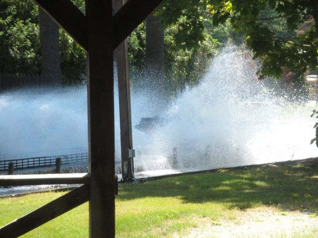

Canobie Lake Park is a small amusement park right at the bottom of New Hampshire that doesn't get talked about that often since it's not super close to any major theme parks nor does it have an amazing stand out coaster of its own. But Canobie Lake Park is definetly a fun little park with some charm of its own. Don't get me wrong. It's got some good coasters as both Yankee Cannonball and Untamed are fun rides and all, but they're not the star focus as there are better wooden coasters than Yankee Cannonball and Untamed has clones around the world. However, Canobie Lake Park is just one of those parks that you can spend all day at and enjoy yourself. They've got a nice flat ride collection, an interesting dark ride to say the least, and a very laid back atmosphere where you can just take it easy and enjoy yourself. In fact, there's something eerily familiar about the atmosphere. Almost like you've seen it in a game. A game about amusement parks perhaps. Yep, this park totally has an RCT Scenario vibe to it. Which I have no problem with. =) Yes, it may be a park primarily for locals in New Hampshire, but I definetly would recommend giving it a visit. It's one of those hidden gems in the United States and just a really fun and enjoyable park to visit. So check it out if you're out visiting all the small little unknown parks up in New England. They just might surprise you.
Here are the reviews of all the Flat Rides at Canobie Lake Park. Now many people would disagree due to the fact that it's got far from the best flat rides ever. And that is in fact true. Canobie Lake Park does not exactly have the best flat rides ever, but they do have a nice mix of unique flat rides and well run flat rides as Canobie Lake Park does feature a lot of flat rides that a lot of parks got rid of in mass. For example, the Rotor. These rides are defunct for the most part. Parks that used to have them got rid of them and I can only imagine that the number of Rotors at parks will shrink and shrink as time goes on. But there's still a rotor at Canobie Lake Park and it's really fun. Ahh memories. And speaking of unique rides, their teacups are quite unique. Mainly in the sense that they're not really teacups. They sort of just go in a Figure 8. I'm not even sure if they spin or just go on the track. I'm not a major fan and definetly prefer regular tea cups, but even so. I'd recommend riding them just for the sake of uniqueness. And those are the two main...unique flat rides. Well, there is a Caterpillar, which is a rare flat ride, but I didn't ride it. Though there are plenty more flat rides to enjoy. They also have a double shot, which has a really good program. They also have a wipe out, a bouncy bouncy ride, a frisbee, flyers, a pirate ship, some chairswings, a round up, a mirror maze, bumper cars, and a carousel.
It may be a dying breed, but it's still fun to this day.
Dark Rides
Canobie Lake Park certainly has an interesting dark ride. Now it's not a shooting dark ride nor is it interactive or anything like that. However, it is a really fun dark ride with a certainly strange story. The Mine of Lost Souls. It starts out harmless enough. We're just exploring the mines out in New Hamphshire. We go through the tunnels, and somehow end up in Ancient Egypt. Hi, how the hell did this happen? It's like the transition from a dream where random places just merge together in ways that make no sense. And I like dark rides that don't make sense. Check it out and take the joruney from New Hampshire to Egypt.
"Your souls are mine."
Water Rides
I rode the park's log flume, Saw Mill Log Flume. And while it was far from the best log flume ever, I must admit that I liked it. True, it did have a sort of RCT feel to it (then again, all of Canobie Lake Park does). But I still really liked it. It had a nice atmosphere to it, it got you fairly wet, and it had a couple good drops. So despite it's total flatness, I'd give their log flume a pass. Oh, and they also have a Shoot the Chutes ride. But I didn't ride that and it didn't look like anything special.

SPLOOSH!!!
Dining
The dining at Canobie Lake Park is nothing special. It's all typical amusement park crap. Pizza, Hot Dogs, Hamburgers, Cotton Candy, Ice Cream, Popcorn, the ususal. The only cool thing is that everythings from a stand that looks like was designed in RCT. Again, contributing to the RCT vibe of this park.
"Popcorn Stand #1 is a really good value."
Theming and Other Attractions
Here are the reviews of all the other stuff at Canobie Lake Park. As for theming, there's pretty much none. I mean, there's a tiny amount of stuff sprinkled here and there. But yeah. There's pretty much no theming, though I will admit that I like the parks setting on Lake Canobie. And as for other stuff to do, again, there's not much. It's mostly just rides. There's arcade games. That's another thing to do. But that's standard and nothing special. So yep. Nothing to say here.
In Conclusion
Canobie Lake Park is a fun little amusement park that'll definetly keep you occupied for a little while. They do have some good roller coasters as Untamed is a fun Euro-Fighter and Yankee Cannonball is an underrated wooden coaster. And on top of that, they have a good atmosphere and a nice mix of other rides including some flat rides that you can't find in other theme parks, and a dark ride that'll certainly send you on a journey. It may be intended for local audiences in New Hampshire, but Canobie Lake Park is just an overall fun amusement park. And the good news is that it's not too far from the other more popular New England theme parks such as Lake Compounce and Six Flags New England (New England states are really small). So definetly give Canobie Lake Park a visit if you're in the area.
Enthusiast FAQs.
*Are there kiddy coaster restrictions? - Canobie Lake Park doesn't have a kiddy coaster. However, if you're one of those super whores who count powered pseudo-credits (how sad), then yes, you will be allowed on the one here.
Tips
*Get on Yankee Cannonball and Untamed early as those tend to have lines due to their popularity and not-so-great capacity (it shouldn't be too big of a problem though).